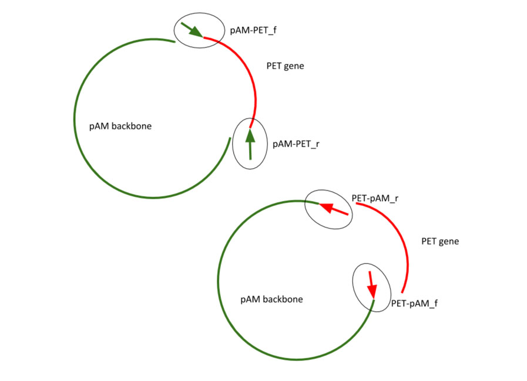
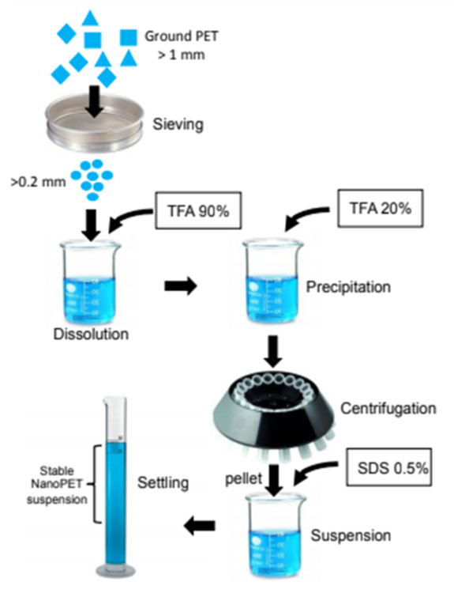

There were many important experiments that were conducted in order for this project to be developed. In this page you will find an explanation of the experiments that were conducted and what was the purpose behind them. Additionally our protocols have a detailed explanation of how each experiment was conducted and our Notebook contains results that were yield from these experiments.
Overview of Experiments
DNA Mini Prep
This is used to harvest the genetic information of interest from cultured cells. It yields template DNA which can be used for PCR.
PCR Amplification
The goal of amplification PCR is to make many copies of our fragments of interest using designed primers.
PCR Screening
The goal of screening PCR is to yield fragments of known sizes which will indicate the correct fragment
Gel Electropheresis
This is a procedure used to separate DNA fragments based on size. It is used to identify fragments.
PCR Purification
PCR fragments need to be purified, this ensures that it is just DNA material is present and prepares it for gibson, screening, and sequencing.
Gibson Assembly
A procedure which allows for the ligation of isolated fragments into a complete plasmid.
Transformation
This is used to uptake the designed plasmid into a TURBO E. Coli cells which includes the F’ plasmid
Fluorescent Nanoparticle Development
This is a procedure used to create the nanoparticles which will be used to test PETase in E. Coli and superPETase in S.e.
Protein Purification
This is a procedure that allows for PETase in E. Coli to be cultured and used to degrade and test the nanoparticles
What is PCR?
PCR is an in vitro technique that amplifies a fragment of DNA. With many copies of a targeted sequence, the DNA is able to be processed for many applications, such as: sequencing, running gel electrophoresis, or cloning.
To run a PCR a few things are needed:
Template DNA, this is the fragment of DNA in interest. It can be prepared with a mini prep and further modification within the procedure.
Forward and reverse primers, these provide a starting point for DNA polymerase to attach. The primers are designed in a way to capture the entire region of the target DNA. There will be a primer for the beginning of the sequence and a primer for the ending of the sequence, refer to these as forward and reverse, and they will bind to their complementary pairs on opposite strands of the template DNA
DNA Polymerase, this is a heat stable enzyme that extends the primer by adding the complementary nucleotides to the template strand it follows. It needs to be a heat stable because it needs to work after being heated up to nearly 100 °C. The common heat-stable polymerase used in PCR is the taq polymerase, which comes from an organism that lives in hot springs and thermal vents. (For our IPRO we are using Q5 Polymerase. It has a much lower error rate than taq)
dNTP, these are the nucleotides. You can’t build a new strand of DNA without nucleotides. Because this is not within an organism that provides them, they need to be added to the reaction
Buffer solution, this provides an optimal conditions for polymerase activity
Water, to prevent DNA degradation
PCR is ran through a thermocycler. This instrument follows 3 basic steps:
Denaturation of template DNA: The block with the PCR tubes is heated up to 96 °C which will cause the template DNA to denature, the single double stranded DNA will become two single stranded DNA.
Annealing of primers to template DNA: The PCR block is cooled to 50-65 °C which promotes the binding of the primers to their complementary sequences on the template’s single stranded DNA.
Extension: The PCR block is heated up again, this time to 72 °C. This allows the polymerase to bind to the free 3’ end of the primer and extend, making a new double stranded DNA fragment
This processes is repeated 25-35x doubling the amount of DNA in the test tube every cycle.
What is Gel Electrophoresis?
This is the technique of separating charged molecules by their size using a current. As the current passes through, the positively charged end pulls the negatively charged DNA. The further the fragment of DNA gets pulled, the shorter it is. All the DNA has the same charge, so mass is the differentiating factor that allows for the separation. The smaller the mass the shorter the segment of DNA.
This is an important part of our lab work, as if the gel runs correctly we’ve done our PCR correctly with the primers that work! If our gel runs incorrectly, retry with controls to evaluate your technique. If it's not your technique, different primers may need to be chosen and the PCR should be redone.
How do you tell if your gel actually WAS successful? The first sign of success is if you see bands streaking down the lane, UV light will illuminate these bands. You can tell the length of each band by the incorporation of the DNA ladder, a standard solution that contains known band lengths for comparing the DNA bands you are investigating. Once you’ve compared your bands to the ladder’s, you would go into a program such as SerialCloner, or of the sort, to see where the primers you used attached the DNA and the view the length of each fragment. If the two observed/recorded length’s match, that off the DNA ladder and the program, you’ve successfully ran a PCR.
Whats next after a gel tells you if your PCR was successful? Amplification! Create many copies in preparation for Gibson assembly.
Gibson Assembly
Gibson assembly is a molecular cloning method that allows the joining of multiple DNA fragments in one reaction.
There are a few requirements for the Gibson assembly to be successful:
DNA fragments should be of a specific size, usually no less than 20 bp and no more than 40 base pairs. In our project, these fragments were created by PCR.

Figure 1. Schematic diagram of Gibson primer construction
The fragments then have to be incubated with an enzyme mix, which is composed of three enzymes, Exonuclease,polymerase and DNA ligase. The function of the exonuclease is to chew back the 5’ end of the fragment which allows the reaction to occur in one single process. The single stranded regions of adjacent DNA fragments can anneal. The DNApolymerase fills in the gaps between the fragments and finally the DNA ligase removes the nicks in the DNAand joins the DNA adjacent segments. This solution is incubated at 50C for 1 -2 hours
Transformation
Transformation is the process in which foreignt DNA is introduced into the cell. Because our project goal is to introduce this sequence into cyanobacteria, we first have to transformed into E.coli cells, which would also allow for our plasmid to replicate.
When the transformation process is done,it allows the pores of the cell membranes to let plasmid DNA through and into the cell. Following transformation, the whole mixture was inoculated onto a streak plate including streptomycin. and incubated overnight. There were 12 successful colonies.
Plasmid DNA Mini Prep
Brief Overview
The whole point of a mini prep is to isolate plasmid DNA from a bacterial cell. This process is fast and efficient making it a useful tool in many laboratories.
A mini prep is also known as an alkaline lyse. This is derived from the use of an alkaline solvent that lyses the cell membranes.
Broken down into its basic steps, a mini prep consists of a disruption in the cell structure to make it lyse and the separation of chromosomal DNA, plasmid DNA, cell debris and insoluble material.
Basic Theory
By adding Solution #1, EDTA will remove cations and destabilize the cell membrane and glucose will maintain osmolarity and will prevent the cell from bursting.
Solution #2 is composed of SDS, a detergent used in various soaps, shampoos and toothpastes, and NaOH, a strong base; these are where the terminology “alkaline lysis” comes from. The SDS will poke holes into the cell membranes. The sodium hydroxide loosens the cell wall and releases the plasmids and DNA fragments . All the chromosomal DNA will be denatured and linear at this point. However, it is due to the plasmids configuration constraints that they remain circular, but still denatured.
The addition of Solution #3, made up of potassium acetate, allows for the renaturing of circular DNA and ridding of “garbage.” The lowering of pH neutralizes the alkalinity of Solution #2, which causes the chromosomal DNA to become insoluble and precipitate out. The KAc will react with the SDS from Solution #2 to from KSD which is insoluble and precipitates out of the plasmid DNA.
At this point it is necessary centrifuge and collect the supernatant which contains the plasmids. Everything else (chromosomal DNA, proteins, cellular components) will be in the pellet.
Adding cold isopropanol and salt to the supernatant just collected which will mask the negatively charge of the plasmid DNA fragments allowing it to precipitate out into the pellet. The pellet containing plasmid DNA can be retrieved after centrifugation.
Assay
In order to test the cyanobacteria for extracellular production of PETase, a unique method of assaying was developed. This entails determination of the size of the nanoparticles of PET. These particles were labeled with fluorescein. The breakdown of PET was quantified through fluorimetry.

Figure 2. Diagram of assay procedure
Fluorescent Microscope
Fluorescence of label particles was observed by both microscopy and spectroscopy. Particles were clearly fluorescent when viewed under a fluorescence microscope, left, figure 3. On the right, figure 3, the fluorescence spectra of fluorescein embedded in PET nanoparticles (blue upper) is comparable in the emission side to free aqueous fluorescein (green, lower), with maximum near 520 nm, but the excitation spectra is significantly blue shifted, with a maximum near 440 nm, compared to a typical 494 nm excitation maximum for aqueous fluorescein. This shift can potentially be used to monitor release of fluorescein as the particles are degraded.
Figure 3. Images of particles
Protocols
Here are the processes involved in the creation of our product.
Click the protocol you'd like to see in full view.
Agar Plateing
Note: may have a distinguishable smell
Before going through the procedure, make sure you have made and autoclaved the (correct) liquid agar for your culture (depends on plasmid, as well as bacteria)
Making Liquid Media
Obtain a glass bottle in the green cabinet (on the west side of lab)
4g of LB media and 4g of agar
should be 2% of the media for each
both found in chemical cabinet on east side of lab room
Add 200mL of H2O
each bottle has a piece of tap that read “LB200” to the top of the tap is how much water to add, but measure it out before
Tap the bottom of the bottle to mix solids into solution
Put a new piece of autoclave tap on it
Run Liq1 program in autoclave
Let cool
Add appropriate antibiotic at a .001:1 ratio of antibiotic to LB media
For our purposes (pAM_PET), we will be using streptinomycin or spectinomycin
200uL of antibiotic : 200 mL of LB
Pouring Plates
Be sure to be wearing gloves and try to not have mouth open when pouring plates. Sterility is key!
Clean workbench with alcohol
To the warm/cooling agar, add desirable antibiotics
Can’t autoclave antibiotics, they will become inactive
Lay out sterile plates
Quickly! Take agar, uncover one plate, pour agar, close plate cover, repeat for all plates
Only need a small film of agar on the plate
Pour reasonable amount and after you’ve closed cover GENTLY and SWIFTLY swirl the plate to make sure it's completely covered in agar
Leave the agar to cool and settle
Because you poured warm agar, condensation will begin to form on the cover to the plate
Rinse out bottle containing liquid agar right after usage
Once agar has solidified flip plate over to be upside-down (the preferred storage state of an agar plate) and label the type of agar used
Leave plates out overnight (or similar duration) to rid the plate of condensation
Agarose Gel Electrophoresis Procedure
This is a procedure used to separate DNA fragments based on size. It is used to identify fragments.
Fluorescent PET Nanoparticle Procedure
This is a procedure used to create the nanoparticles which will be used to test PETase in E. Coli and superPETase in S.e.
Gibson and Transformation
A PCR procedure which allows for the ligation of isolated fragments into a complete plasmid.
DNA Mini Prep
This is used to harvest the genetic information of interest from cultured cells. It yields template DNA which can be used for PCR.
High Quality DNA Prep
PCR Procedure
PCR Purification
PCR fragments need to be purified, this ensures that it is just DNA material is present and prepares it for gibson, screening, and sequencing.
Protein Purification
This is a procedure that allows for PETase in E. Coli to be cultured and used to degrade and test the nanoparticles